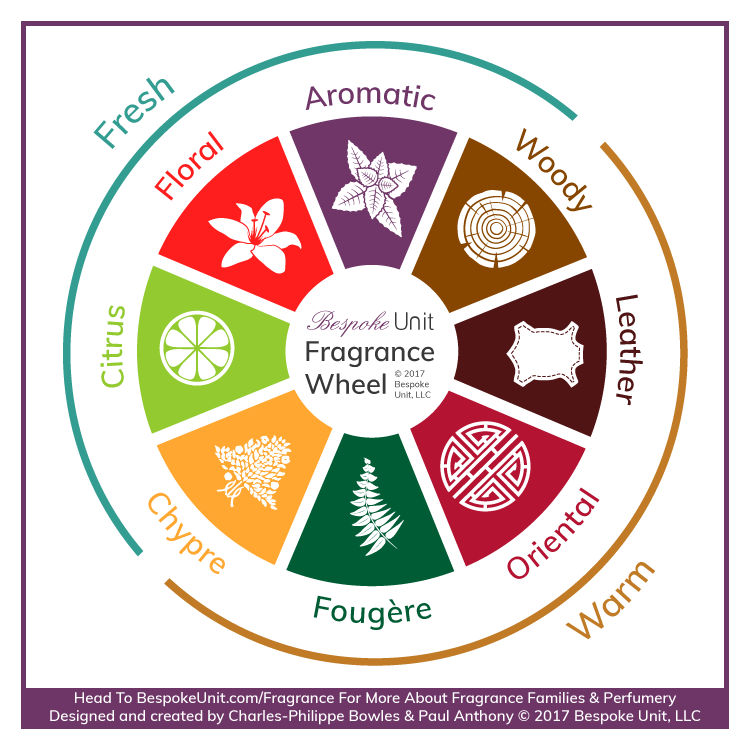

The main fragrance families:
| Citrus | This family features fresh and uplifting notes derived from citrus fruits such as lemon, bergamot, and orange. Citrus fragrances are often light, crisp, and revitalizing. |
|---|---|
| Floral | Floral fragrances are centered around the scents of flowers. Common floral notes include rose, jasmine, lily, and lavender. Floral scents can range from light and airy to rich and sensual. |
| Oriental (Spicy) | Oriental fragrances are characterized by warm, exotic, and spicy notes. They often include ingredients like vanilla, cinnamon, cloves, and resins. These scents are often rich, sensual, and long-lasting. |
| Woody | Woody fragrances are built around the scents of various woods, such as sandalwood, cedarwood, and patchouli. They can be warm, earthy, and sometimes have smoky undertones. |
